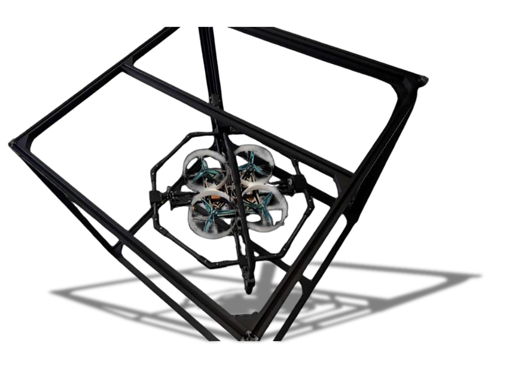

AeroBOT-T1 四旋翼无人机飞行控制实验平台
集教学与科研为一体的多功能实验台，支持从数学仿真到实物飞行的完整控制系统设计流程，一站式覆盖飞控算法验证与视觉感知开发。

产品概述
AeroBOT-T1 四旋翼无人机飞行控制实验平台是集教学与科研为一体的多功能实验台。它在满足日常学生教学实验的同时，兼顾无人机平台姿态控制、制导导航、人工智能、计算机等学科专业的科学研究。
本实验台可支撑控制系统数学仿真实验、模拟软件飞行实验、台架实验、实物飞行实验，具备模型编译、下载、数据监视记录、后处理等完整的工具软件，能够帮助学生熟悉整套控制系统设计流程。丰富的教程及配套资料，代码全部开源，软件终身免费升级，极大降低开发门槛。
核心功能
三轴360°全向机动：支持横滚、俯仰、偏航三个轴向的完全自由转动，适应复杂飞行工况的模拟。
实时数据采集与分析：高精度传感器实时反馈飞行姿态数据，通过软件进行可视化监测与记录。
多平台兼容：兼容 ROS、MATLAB 等主流科研工具，便于算法快速验证与二次开发。
完整工具链：提供模型编译、代码下载、数据监视与后处理全套工具软件，贯穿控制系统设计全流程。
产品特点
三轴360°全向机动，适应复杂飞行工况。
实时数据采集分析，精准飞行状态反馈。
兼容ROS/MATLAB，便于算法验证与二次开发。
丰富手册与实验课程配套支持，代码全部开源，软件终身免费升级。
基本配置参数
应用价值
AeroBOT-T1 为无人机飞控系统教学提供了一个安全、高效、可重复的实验环境。学生无需担心坠机风险即可反复调试 PID 参数、验证控制算法，加速从理论到实践的转化。
其全向转动台架与实时数据采集系统，使得科研人员能够精确复现飞行器在复杂工况下的动力学响应，为控制策略优化、故障诊断以及 eVTOL 等新型飞行器的研发提供了宝贵的实验数据支撑。
适用场景
适用于无人驾驶航空器系统工程、机器人工程、人工智能、自动化、电子信息、计算机等专业的飞控教学实验、毕业设计、科研创新，以及无人机研发实验室的控制系统验证与性能测试。